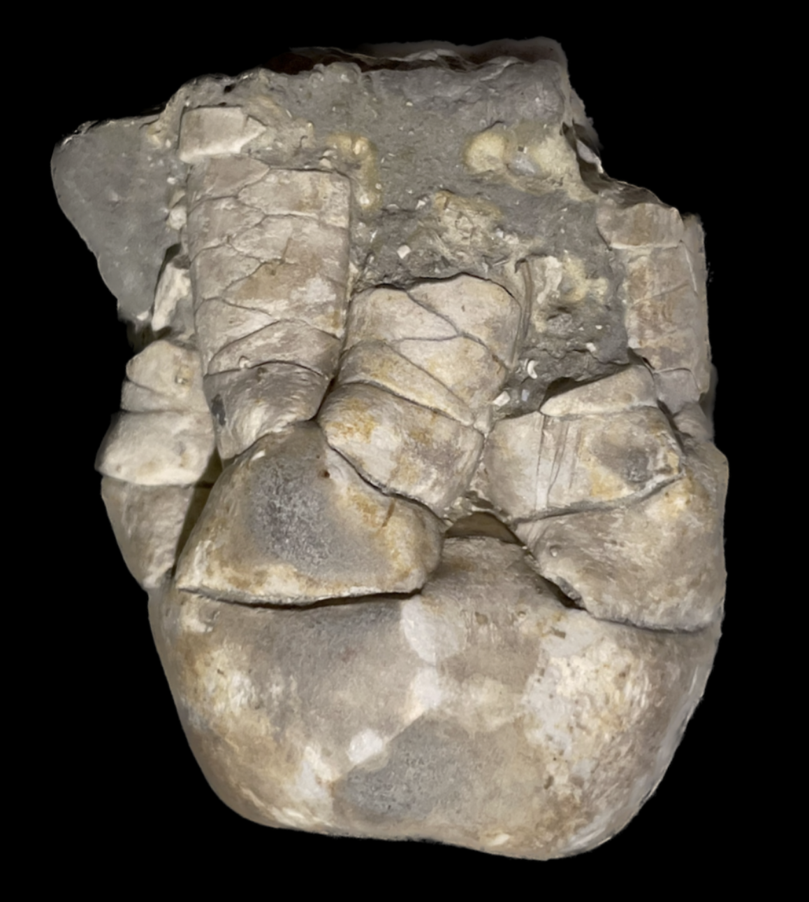
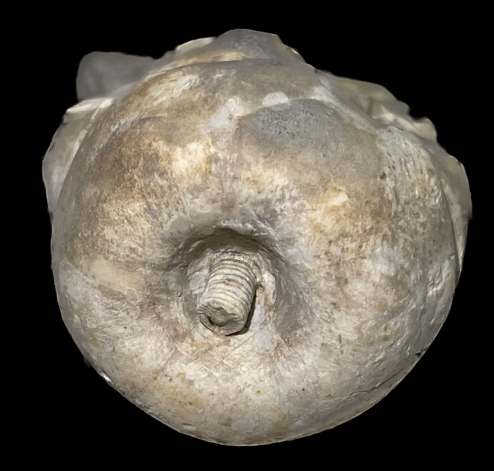
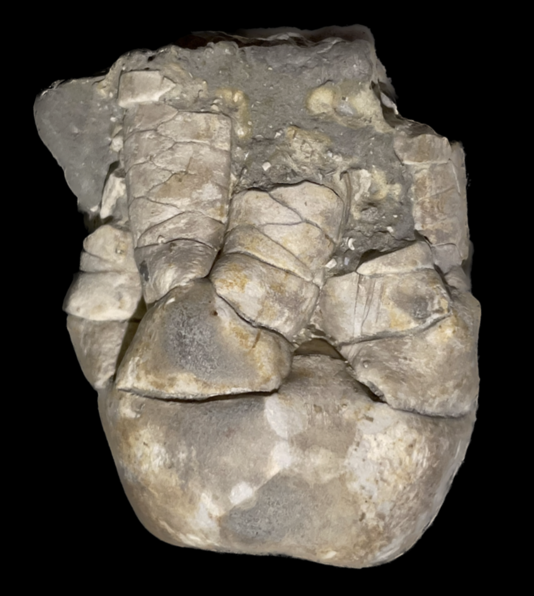
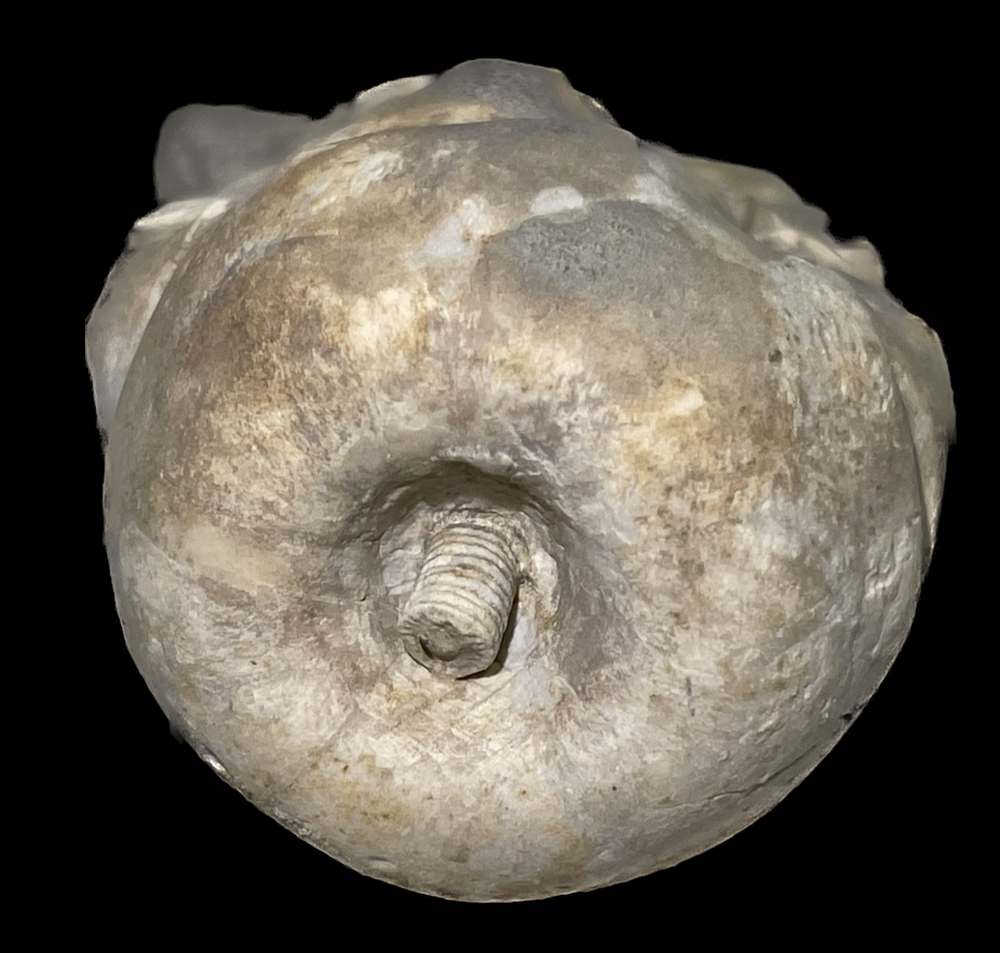

Delocrinus sp.
Permian
Wabaunsee County, Kansas, USA
Size: 3.5 cm crown
At a glance this crinoid might not seem too impressive, but a fossil is all about context and provenance. This is a partial crown from the Permian of Kansas USA, and therefore a very unusual and interesting specimen. Though the species was unidentified when I acquired it, it seems to resemble "Delocrinus vastus", which I've read is a Permian member of the genus that loses its primaxillary spines and increases in size compared to Pennsylvanian species of Delocrinus.
 
